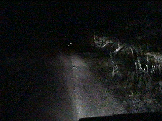
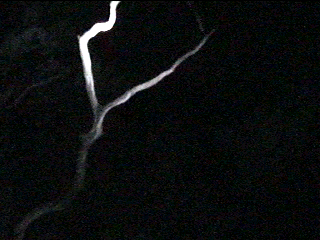

A story I got from Haunted Ohio's "Fright Bites" chapter is that of Euler Road, located southwest of Bowling Green in Wood County. Legend has it that the wooded north-south stretch of Euler Road between Wingston and Potter Roads is haunted by the ghost of a baby whose mother hung it from a tree branch. For this reason, the road is known as Crybaby Lane.

On July 28, 2000 I visited Bowling Green with Hoss and, through the use of my road atlas, located Euler Road. It's a pretty ordinary rural road most of the way, but the little north-south jog is a creepy stretch. The trees encroach and turn the road into a tunnel. It's pitch black. It was so dark, in fact, that I couldn't take photos; I had to capture images from the video I shot.

We parked and got out and paced up and down the road. It was dark and scary, but the barking of a dog in the yard of a house nearby dampened the feeling somewhat. Hoss quite astutely determined that a particularly jagged and bare branch overhead was probably the one from which the baby had been hung; it stands out among the greenery.
We tried to talk to the ghost; nothing happened. We did, however, hear some barely audible sounds in the woods, but that could easily have been an animal. After waiting around for a while, another car went by. We got back into my car and let off some fireworks, then took off. It seems likely that this story got started by Bowling Green students who discovered a very creepy stretch of road out in the country and made up a story to go along with it. Either way, we didn't see a ghost this time. Oh well.